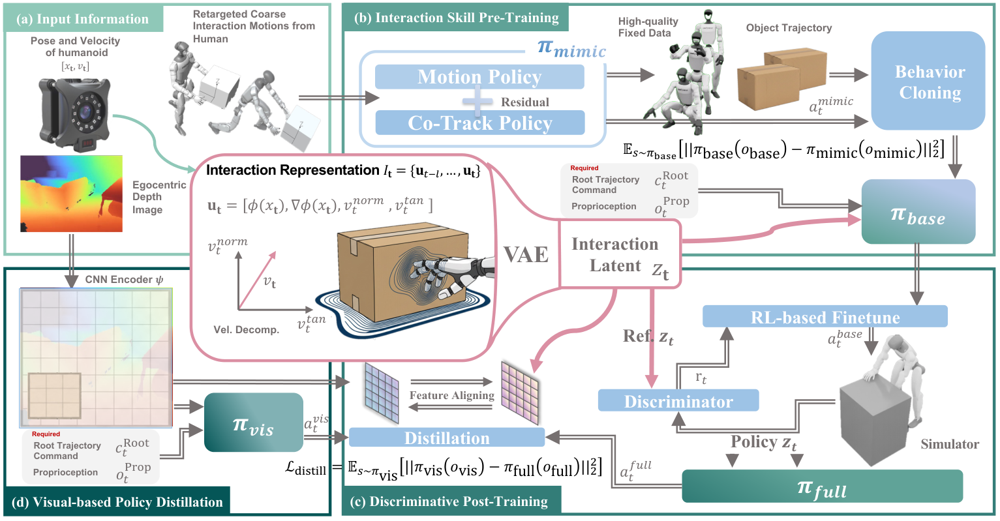

Key Contributions #
Generalize across objects
The same policy lifts and manipulates objects with diverse geometry (e.g., 23 cm box to 60 cm cylinder) by operating on a distance-field representation.
How we achieve this
We represent interaction in a distance-field space, which acts like a quotiented task space over object geometry. This gives the policy dense local geometric cues that transfer across object shape and scale without redesigning task formulations.
Multiple skills in one policy
A single policy composes pick up, push, sit/stand, and carry over long horizons without task-specific modules.
How we achieve this
We build a unified interaction representation shared by all skills. With one common observation/reward interface across interactions, a single policy can learn skill composition from consistent inputs rather than isolated per-task pipelines.
No hand-crafted reward
Training uses adversarial interaction priors in the geometric domain instead of motion-tracking or hand-designed shaping rewards.
How we achieve this
We use discriminative objectives to enforce natural and physically reasonable interaction trajectories. This removes the need for brittle task-specific reward shaping and improves behavior quality across diverse interaction modes.
Root command & action label only
At inference, control is specified solely by target root trajectory and action labels; no motion exemplars or retargeting.
Why this matters
We simplify control inputs to root commands plus action labels, making human-in-the-loop control straightforward and enabling clean integration with upstream planners or VLM-driven instruction modules.
How We Do It
We use a distance-field-centric policy representation. The top row visualizes DF-driven interaction for three different skills (pick, push, sit), and the second row shows scale generalization.

Method Overview
Unified distance-field representation and policy learning pipeline.
Live MuJoCo Session
Use this embedded session to inspect online rollout behavior directly in-browser. Add your own objects to the session and interact with them.
Feel free to test how purely data-driven interaction policy complete tasks (or fail).
The live simulator is paused by default to avoid heavy startup on page load.
Hosted locally for reproducible demos and GitHub Pages compatibility.
Open it in a new tab if you need more space:
Humanoid Policy Viewer.
Note: The objects' DF is discretized and cached, so the policy's performance is slightly degraded. To report issues, please contact yutang.lin@stu.pku.edu.cn.
Please use Google Chrome for best performance.
1. Interact with Various Objects #
One policy generalizes across object shapes and sizes—box, foam cylinder, and ball.
*The foam cylinder and soccer ball are not in training data.
2. Autonomously Recover from Disturbance/Failure #
After external disturbance or failed pickup attempts, the policy re-initiates interaction and recovers autonomously using continuous geometric feedback.
3. Execute Consequent Long-Horizon Tasks #
A single policy composes multiple skills in sequence over extended horizons, showing smooth transitions between interaction modes.
4. Mocap and Depth Input as Perception #
Our method runs with either motion-capture object state or egocentric depth only—enabling deployment with or without external tracking.
Same task: left = mocap object state, right = depth-only policy.
Additional Vision-Only Demos
Our method can push objects with different geometries and scales. Thanks Yixuan for his dedication 😁.
Long-horizon completion: push + pick (vision). Right: egocentric depth perception.
Quantitative Results at a Glance #
Visual summaries: simulation scale generalization, long-horizon completion, and real-world deployment.
Single-Task Scale Generalization (Ours)
One merged figure for PickUp success across object scales (from TABLE II).
Long-Horizon: Ours (Mocap) Only
Completion rate of our main method as the number of sequential tasks increases.
Abstract #
Enabling humanoid robots to operate autonomously in persistent, long-horizon interactions with unstructured environments remains an open challenge. Existing approaches often depend on detailed reference motions, task-specific reward design, or complex multi-stage pipelines, limiting their adaptability to environmental variations and hindering broad generalization across objects with diverse shapes and scales. We introduce DF-ACT, a reference-free framework that leverages Distance Field (DF) as a unified interaction representation, enabling generalizable and long-horizon humanoid interaction. The robot operates directly on the DF to extract dense, directional geometric cues, allowing fast adaptation to object contours without assumptions on object geometry. At inference time, DF-ACT requires only a target root trajectory: actions are continuously conditioned on local geometry rather than predefined motion references, which enables smooth transitions across interaction modes. As a result, a single policy learned within DF-ACT can execute long-horizon tasks by composing interaction skills such as picking up, sitting, pushing, and carrying over time, while naturally supporting online correction and recovery from interaction failures through continuous geometric feedback. Across diverse interaction tasks (PickUp, SitStand, Push, and Carry) and object scales from 0.4× to 1.6×, DF-ACT achieves robust performance without motion references.
Paper (PDF)
If the PDF does not display, download it directly.
BibTeX
@article{lin2026dfact,
title={DF-ACT: Generalizable Long-Horizon Humanoid Interaction via Distance Fields},
author={Lin, Yutang and Cui, Jieming and Li, Yixuan and Jia, Baoxiong and Zhu, Yixin and Huang, Siyuan},
journal={Preprint},
url={https://df-act.github.io/}
}